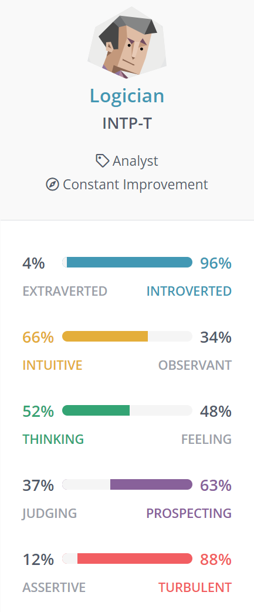
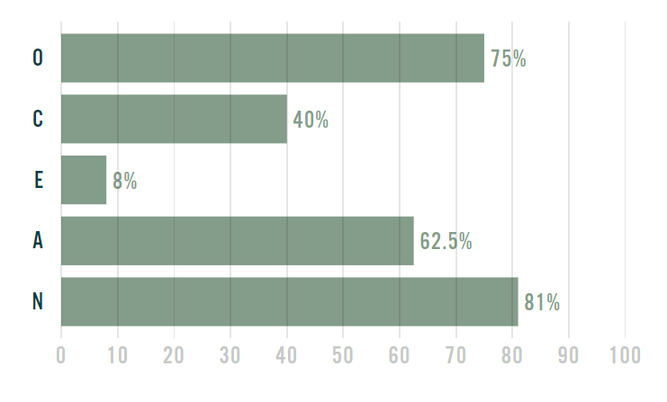

Personal Information
I was born in Australia but my parents were born in Vietnam. In my household, we speak both English and Vietnamese.
I went to Overnewton for prep, Emmaus Catholic Primary School from Year 1 to 6, Catholic Regional College (CRC) North Keilor from Year 7 to 10, and CRC Sydenham from Year 11 to 12.
One interesting fact about me is that I have managed to build my own relatively high-end PC by myself if you don’t include the YouTube tutorial I used.
Interest in IT
My interest in IT grew as technology advanced over the years. The world relies on technology, information, and data; so I wanted to understand more about it. I guess I was always interested ever since I was young. Even though at that time I didn't even know of the term 'IT', I was fascinated by technology and what it could accomplish.
My introduction to technology began as a child when my mum bought me my first laptop, which was a MacBook. And that was when I really got into video games, which is a hobby that I still have to this day. Back then, I would play games such as Minecraft and Roblox with my cousin, who also got his own laptop at about the same time I got mine. In addition to video games, we would also just make random videos with the Photobooth app and mess around with many filters it had. But now in the present, I have my own PC setup in my living room that I use basically everyday. In high school, I chose to study subjects such as VET IT, Software Development and Data Analytics. And through studying these subjects, my interest only grew as I now realised the complexity behind things such as coding, database management, and different software and hardware.
I decided to come to RMIT because of the fact that it has a great reputation regarding the subjects of IT and other related topics. Additionally, the RMIT campus just so happens to be in the most convenient location compared to a few of the other universities. So travelling from my home to the campus isn’t too much of a hassle. Through my studies, I expect to learn everything I need to know to get into the world of IT and to gain opportunities for a career in IT.
Ideal Job
Python Developer

For this job, they are looking for a Python developer to work in a small team that is developing a Python and Django based server platform to provide APIs to financial institutions. There are many responsibilities required for the role but they mostly revolve around software development, and creating software solutions. This job is appealing to me because I want to be able to help in providing solutions to complex issues to enhance and support others. The development of software has always been interesting to me.
This particular job also requires a lot of skills that revolves heavily around coding and programming. This job requires experience in:
- Design, documentation, and implementation of REST API interfaces
- SQL queries
- UI design and development
- Python, Javascript, SQL, HTML, XML or other programming languages
- Web services
- TCP / IP and higher-level protocols
- Database modelling
- Web frameworks and application servers
- Development practices
- DevOps related practices
- Ability to develop scripts to aid application administration
- Platform monitoring tools
- Minimum of 5 years of experience in managing, maintaining, developing, and deploying complex integrated application environments
Most of the required experience listed are things I would obviously not have at this time. However, I do have some experience with Python, databases, SQL and HTML. I hope to learn some of the required knowledge from my IT university course. Anything else that is needed I will most likely have to learn by myself in my own time, and I also could gain some valuable experience in other IT related jobs that don't require as many skills needed for this job.
Personal Profile
Myers Briggs Type Indicator
Strengths
Analytical
Logicians analyse everything that they come by. This gives them a talent for noticing unexpected patterns and connections that other personality types may miss.
Original
Logicians are creative due to their imagination and can come up with unique ideas that most people wouldn't think of. Although, many of these ideas may not be practical.
Open-Minded
Logicians are curious in nature and wish to learn everything that they can. They're always interested in new ideas and different ways of doing things as long as those ideas are supported by proper logic and reason.
Objective
Logicians care about the truth and reality. Instead of ideologies and hypothetical ideas, they prefer to understand what is actually going on. Therefore they aren't affected by bias and misinformation.
Weaknesses
Disconnected
Logicians tend to get lost in their own thoughts, even when surrounded by others. A conversation may have already moved to the next topic by the time they find what they want to say. This may cause them to feel detached from other people, especially in large social gatherings.
Insensitive
Logicians see rationality as the key to a better world. This means that they may forget the importance of the irrational values such as: emotion, compassion and tradition. Due to this, they may accidentally come across as insensitive or unkind, even though their intentions are generally good.
Dissatisfied
Logicians can’t help but strive to believe that things can be further improved. They are always searching for problems to solve and things to learn. But this mindset can become overwhelming, and at some point they may focus too hard on bettering themselves that they can forget their own basic needs and responsibilities.
Perfectionist
Logicians want to get things done, but their constant aim for perfection can hinder this. Occasionally, they may get so lost in overthinking various options that they never manage to reach a final decision. They may also give up on projects that don’t match the ideal vision in their mind.
Learning Style Test
For the learning style test, I used the short quiz from Matrix Education. According to said quiz, I am a solitary learner that prefers to work alone in a quiet place and self-study to learn new things.

The Big Five Personality Test
- Openness refers to a person’s tendency to think in abstract, complex ways.
- Conscientiousness refers to a person’s ability to exercise self-discipline and control in order to pursue their goals.
- Extraversion refers to a person’s inclination to seek stimulation from the outside world, mainly in the form of attention from other people.
- Agreeableness refers to a person’s tendency to put others’ needs ahead of their own, and to cooperate rather than compete with others.
- Neuroticism refers to a person’s tendency to experience negative emotions, including fear, sadness, anxiety, guilt, and shame.
Personally, these test results don't really mean anything to me. It's essentially telling me things I already knew about myself but in a more formal way with more words. The results themselves are not going to affect my behaviour in a team, but it's my actual personality that determines my behaviour in a group environment. Although, it did remind me of how reserved I am and my ability, or lack thereof, in socialising. But my skills in socialising differ depending on the siutation. I can be quite talkative with friends that share many interests with me, but I heavily struggle to converse with new people. I guess what I can take from this is the fact that I should try putting myself out there a bit more so I can come out of my shell, but that's easier said than done.
Project Idea
Augmented Reality Home View and Interior/Exterior Design App
My project idea is an augmented reality design app that will enable users to use the cameras of their mobile devices such as a smartphone or a tablet to be able to design both the interior and exterior of their homes. The user will be able to virtually add view furniture in their own homes before they decide to make any decisions or purchases.
The market for augmented reality (AR) 'reached the $10.7 billion mark in 2019 and is expected to grow up to $72.7 billion by 2024, exhibiting a CAGR of 46.6%' (ScienceSoft n.d, para. 1). Interior design is also supposedly one of the most popular usages for augmented reality due to cost and time efficiency for creating design. An app like this will be incredibly useful for designing homes because the user will be able to visually see what the furniture will look like in their homes before they decide to make a purchase. It makes designing homes much more cost and time efficient.
The user will be required to have a smartphone or tablet that has a functioning camera. The app would scan the room or area to determine its dimensions, then the user will be able to select furniture from a catalogue and place it within the room/area and adjust as necessary. Furniture such as couches, tables, shelves, T.Vs, and paintings will be available for the user to add. Additionally, the user will also have the ability to change the design of the walls and floor if desired, such as changing the paint or switching from wooden floorboards to tiles. The scanned room will then be saved and viewable in 3D so that the user will have the ability to make additional changes and adjustments without being in the room itself. The app will furthermore be downloadable on a computer or laptop for the user to use said 3D model for viewing and editing rooms if they desire. Any furniture that the user added and any changes they made to the room itself (e.g. wall paint and floorboards) will then be saved into a list. The user can then view the prices for each item and make appropriate purchases and payments.
Hardware required would be a mobile device, such as a smartphone or a tablet; and a laptop or computer. Software development kits catered for augmented reality such as Vuforia, Kudan AR or Wikitude will also be required. The key aspects for creating the AR app will be: environmental understanding, motion tracking, image recognition, light estimation and 3D model load. The kits previously mentioned will require knowledge in Java and/or C++. Vuforia is considered to be the most popular for AR development and so I will consider using that one. Unity will also be needed if I were to choose to use Vuforia. The process of gaining the skills of using Java/C++ shouldn't be too complicated, although that may take an extended period of time. Unity, on the other hand, is something I already have some experience in.
The outcome of this project, if successful, will be a well-rounded application for mobile devices, computers and laptops that will enable users to virtually design their homes to help them make their final decisions.
References
- 16Personalities (n.d), Free Personality Test, accessed 20 March 2022. https://www.16personalities.com/free-personality-test
- Matrix Education (2016), Quiz: What’s your learning style?, accessed 20 March 2022. https://www.matrix.edu.au/quiz-whats-your-learning-style/
- Matyunina, J. & Yatskevich, O. (2018), 'How to Make Augmented Reality Applications for Your Business.', CodeTiburon, accessed 24 March 2022. https://codetiburon.com/create-augmented-reality-experience-for-business/
- ScienceSoft (n.d), Augmented Reality for Interior Design: Architecture, Features, Challenges, and Costs, accessed 24 March 2022. https://www.scnsoft.com/augmented-reality/interior-design
- Truity (n.d), THE BIG FIVE PERSONALITY TEST, accessed 21 March 2022. https://www.truity.com/test/big-five-personality-test